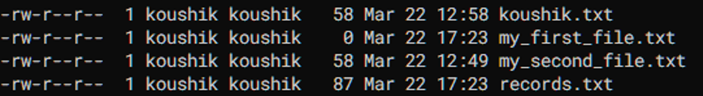

In our previous post, we have seen examples to become confident enough for getting a grip on linux commands. This is the time now to jump into more advanced topics. Let’s go.
Working with permissions
The word ‘Permission’ typically stands for putting a guard wall while accessing any resource. For example, someone may or may not has permission to access a specific folder (directory) in a computer. It all depend on roles and responsibilities of the users.
In linux, permission to access files and directories is categorized into three levels, these are user, group and others. Let’s see what do they mean when they are in action,
user: this category refers to the owner of the file or directory. Being the owner, user has the highest level of access to the file or directory and an user can modify or delete it.
group: this category refers to a group of users having the same level of access to a file or directory. If a group is assigned a specific permission, then all users within the group are also having same permission.
others: this category refers to all other users who are not the owner or part of the group assigned to the file or directory. These users are having lowest level of access to the file or directory.
There are three specific access types for all users - read, write and execute and these are denoted by r, w and x respectively.
Therefore, for each file, access level is represented by a sequence of nine characters just like below:

Don’t consider the very first character as part of access level string as it just denotes whether the corresponding entity is a file or directory, for file it is shown here as ‘-’ (hyphen) and for directory it will be ‘d’
Now, let’s consider one file e.g. records.txt. For this file,
- the user ‘koushik’ is owner of the file as mentioned and ‘koushik’ has both read and write permission but not the execute permission
- the group has only read permission
- others also have read permission
It is to be noted that, read permission will allow anyone to open and see the file contents only, the file cannot be modified or deleted and it cannot be executed as a program.
Permission in numeric mode
All these three characters i.e. ‘r’, ‘w’ and ‘x’ are also represented by numbers as follows:
- r (read): 4
- w (write): 2
- x (execute): 1
and their sum is expressed as the desired permission for an user. Some examples below will make the concept clear.
- r = 4, w = 2, x = 1
- sum = 7
- the user has read, write and execute permission for the corresponding file
- r = 4, w = 2, x = 0
- sum = 6
- the user has read and write permission only for the corresponding file, but the file cannot be executed as a program
- r = 4, w = 0, x = 1
- sum = 5
- the user has read and execute permission only for the corresponding file, but the file cannot be modified
Assigning or changing permission
When a file is created by an user (as records.txt in the above figure), it has certain level of permission, which is typically
- read and write permission for the user who has created the file
- read only permission for the group
- read only permission for anyone who is either not the owner or doesn’t belong to a certain user group
But, there are situations when as a system adming someone may want to modify the permission level for a file, for a specific user and group.
The command chmod is used to modify the permission level for a file.
Below are some of the usages of chmod with explanations
# set execute permission for the user (creator)
chmod u+x records.txt
# set write permission for the group
chmod g+w records.txt
# set full permission for the user, group and others
chmod ugo+rwx records.txtAll these above commands can also be used in numeric mode as well which is easier when you have the permission-number mapping (like r = 4) in your mind,
# set execute permission for the user (creator)
chmod 744 records.txt
# set write permission for the group
chmod 764 records.txt
# set full permission for the user, group and others
chmod 777 records.txtNote that in the above examples, I have assumed records.txt is already having the permission level as 644 (read and write permission for the user, read only permission for the group and others)
Ownership of a file and directory
In the figure below, if you observe, corresponding to each file, it is written as koushik koushik. This is denoting the user and group information for the file.

The command chown is used to allow the ownership info of files and directories to be changed. The word “chown” stands for “change owner.”
Here, “owner” is the username or user ID (a numeric sequence) of the new owner, and “group” is the name or ID (a numeric sequence) of the new group. If no group is specified, the file’s group ownership will not be changed.
The above command will change the ownership of the file to the new_user who also belongs to new_group
If we want to change ownership of a directory we have to use a flag for chown command and that is -R, it denotes changing ownership of all the files and subdirectories within the target directory.
Working with environment variables and paths
Environment variables are like global variables in your program. They are typically static in nature i.e. once they are defined, they are not usually modified.
Such variables can be defined in the terminal using VARIABLE=value command and they are available only for the current terminal session, once you close the terminal (i.e. kill the current terminal session), they are removed from the memory.
There are situations when you may need to create a permamnet environment variable and this can be achived by putting a command similar to what is given below in the .bashrc or .bash_profile file. These files are hidden files (as their names start with a .) and used for storing lot of configuration parametes.
One can make use of the environment variable using $ operator just like $MY_ENV_VAR.
Note that, there is no space characters right before and after the = sign while defining the environment variables.
Just like environment variables, setting up paths is also a very common problem while using any operating system. There is a pre-defined environment variable, PATH, in all linux based systems, that shows all the typical directory paths where the system searches for any executable.
If someone wants to append a new path to this PATH variable, then it is typically done by putting a command similar to what is given below again in the .bashrc or .bash_profile file.
or
Since we are writing this to either .bashrc or .bash_profile file, the system makes this configuration changes permanent.
Also note that, we have to reload the .bashrc or .bash_profile file once we are ready with the changes to have them reflected in the current terminal session by using the below command
or
Working with temporary root access
In linux, a typical user doesn’t have permission to perform certain tasks with administrative previliges, like upgrading the system or creating a new user etc.
To perform these tasks there has to be a special user called superuser. Sometimes it is needed to behave like a superuser and do certain things what the superuser might have done. This is typically known as having sudo access which stands for superuser do.
Here are some usage example to assist you 😄
# updating repository information in Debian based systems
sudo apt update
# upgrading system packages
sudo apt upgrade
# creating a new user
sudo add adduser Sajalrunning all these commands needs the password and additional confirmation from the current user.
Running commands as scripts
Till the previous section, whichever commands we have seen, can also be written in a file with the specific extension .sh and can be executed using that file. Such files are also called shell script. These are heavily used for automation and supporting other administrative tasks.
Let’s see an example below to understand this.
Assume that we have a file called commands.sh in our present working directory. The code listing below can be considered as a template to perform certain jobs with command line utilities.
The first line (#!/bin/bash) is called a shebang, and it specifies the interpreter to use when running the script. In this case, we are using Bash.
Remaining all are the actual commands that will be executed when the script is run.
To run the script, first save it and make it executable with the chmod command as below:
and then run it using bash as mentioned below
In conclusion, the topic we’ve explored in this series of blog posts has been an introduction to linux command line utilities. We’ve delved into the intricacies of making someone more inclined to the command line usages, and hopefully shed some light on having a grip on useful commands.
As we wrap up this post, I want to leave you with some final thoughts as below,
- try to be comfortable with terminal as it is your only friend when you’re on cloud
- play with commands, you will definitely learn something useful
- take help from internet as much as possible whenever you’re stuck
Remember that one simple command can save a lot of boring manual efforts.
Thank you for taking the time to read this post, and I hope you found it informative and thought-provoking.